用户登录与文件传输¶
嘉庚智算中心目前仅支持通过密钥方式登录，不支持通过密码方式登录。
密钥分发¶
用户申请账号后，管理员会将用户的密钥发送到申请账号时预留的邮箱中，按照邮箱指引解压缩附件即可获取密钥。
用户务必妥善保管好该密钥，请勿泄露。
登陆系统¶
Info
当前集群登录节点 IP 为 10.26.14.64。
仅厦大校内网可以访问，校外用户请通过 SSLVPN 或零信任终端访问。
Failure
旧登录节点IP 10.26.14.56 已停止任务提交，如遇到作业长久排队且计算节点均显示为 Drain 状态请检查登录节点是否正确。
Windows用户¶
通过 MobaXterm 登录¶
MobaXterm 是 Windows 下一款终端软件，支持SSH、WSL等，并且包含一个集成的 X 桌面服务，允许您远程运行图形应用程序（如 gnuplot、VMD 等）。
您可以从以下链接下载 MobaXterm 家庭版（安装版）：
请按下图所示步骤操作，在第④步时请导入邮件中收到的密钥，然后点击 OK 即可登录。
通过 XShell(version 7) 工具登录¶

 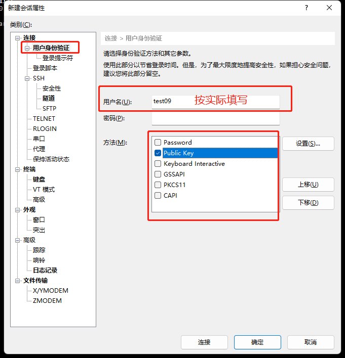
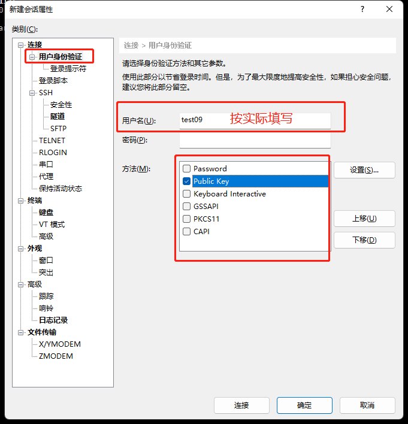
 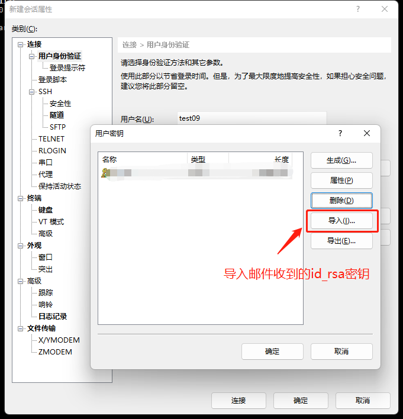
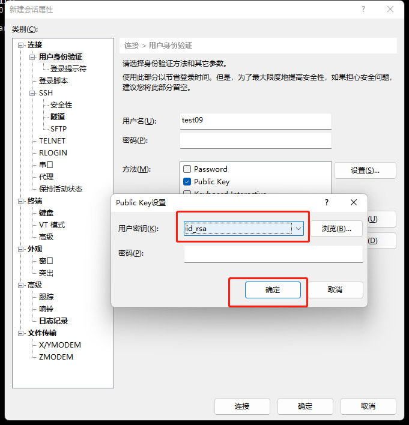
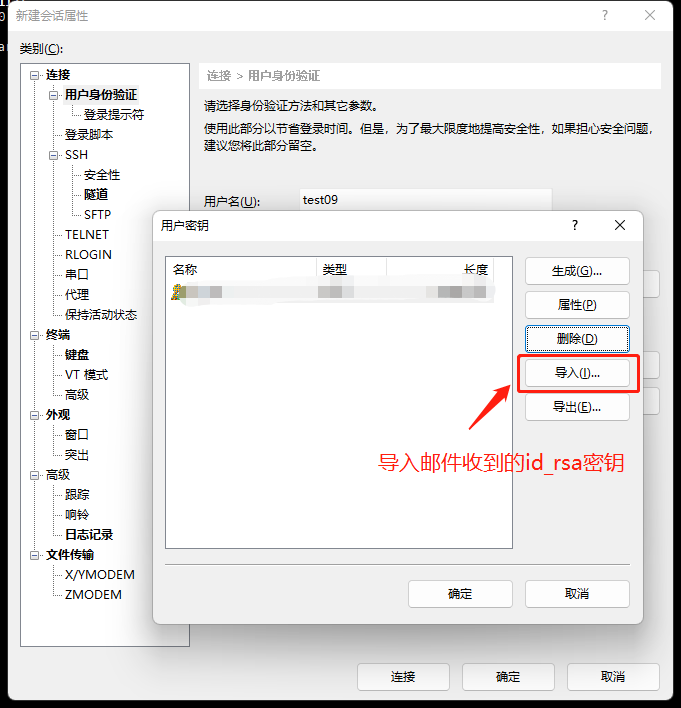
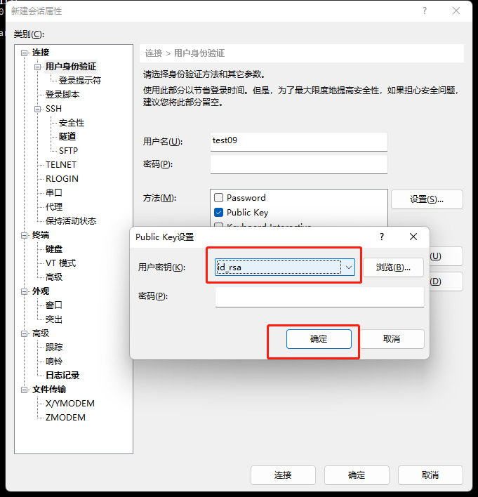

通过CMD(命令提示符)直接登录¶
本方法也适用于使用 Powershell 的情况。我们推荐使用 Windows Terminal 作为终端，Windows 11 用户无须额外下载，Windows 10 用户可以在 Microsoft Store 中下载。
将获取到的密钥文件（id_rsa）拷贝到C:\Users\user1\.ssh目录下

Info
说明：
1. user1 为当前windows实际登录账号，此处仅供参考。
2. 此处假设用户 .ssh 目录下没有 id_rsa 同名密钥文件，如有冲突可以联系管理员协助处理。
通过CMD(命令提示符)登录到登录节点，命令为： ssh account@10.26.14.64，此处account请替换为实际申请的用户账号。如下：

通过SecureCRT工具登录¶
以secureCRT version 9.2.3为例：


MAC电脑用户¶
- 将获取到的密钥文件（
id_rsa）拷贝到~/.ssh目录下 -
在本地
~/.ssh/config配置文件中添加 SSH 服务器信息，格式：# 自定义别名 Host ikkemhpc # HPC集群登录节点IP HostName 10.26.14.64 # HPC集群登录节点IP Port 22 # 根据申请的用户名，按照实际情况修改 User user # 根据获取到的私钥文件名称 IdentityFile ~/.ssh/id_rsa -
在 Mac 电脑命令行终端输入命令:
ssh ikkemhpc，即可登录到HPC集群登录节点。
KeyarchOS 来自于Red Hat Enterprise Linux依照开放源代码规定释出的源代码所编译而成；man 命令或命令加 -h 或 -–help 等选项来查看该命令的详细用法，详细信息可参考CentOS、Red Hat Enterprise Linux手册或通用Linux手册。
文件传输¶
SCP 命令行传输文件¶
Windows/Linux/Unix/Mac 用户均可通过在命令行终端中使用 scp 命令传输。如果传输的对象为少量大文件，且目标环境上没有数据的历史版本，所有需要传输的文件都是首次传输（避免覆盖原来的文件），可以使用 scp 直接拷贝文件。举例如下：
假设用户 user01 在智算中心平台上个人目录为 /public/home/user01
示例1：将本地目录 D:\data 的全部数据上传至智算中心集群用户 user01 的家目录下（以下命令在用户本地电脑运行）
scp -r D:\\data\\ user01@10.26.14.64:/public/home/user01/
示例2：将集群中用户user01家目录中的~/math.dat文件下载到本地电脑的D:\data目录下（以下命令在用户本地电脑运行）
scp user01@10.26.14.64:/public/home/user01/math.dat D:\\data\\

MobaXterm 传输文件¶
MobaXterm 自身即支持传输文件。登录后在左侧的 Quick connect栏即可右键选择上传文件。

XFTP 传输文件¶
如果已经装了xftp软件，也可以使用xftp软件进行文件传输：

 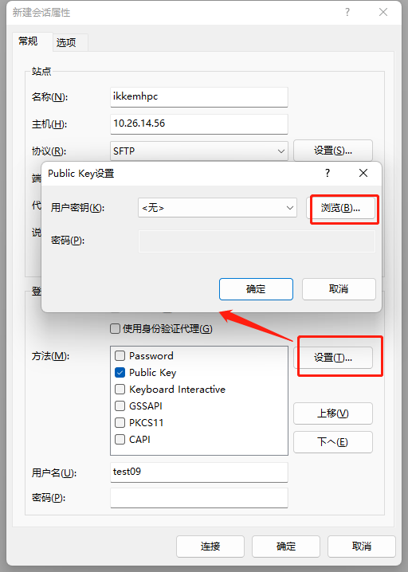
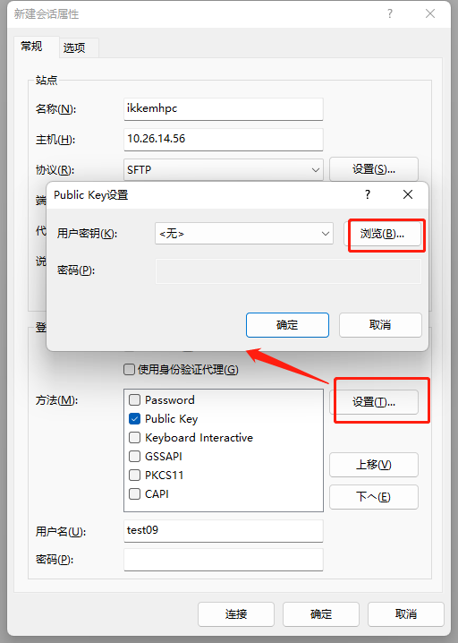
 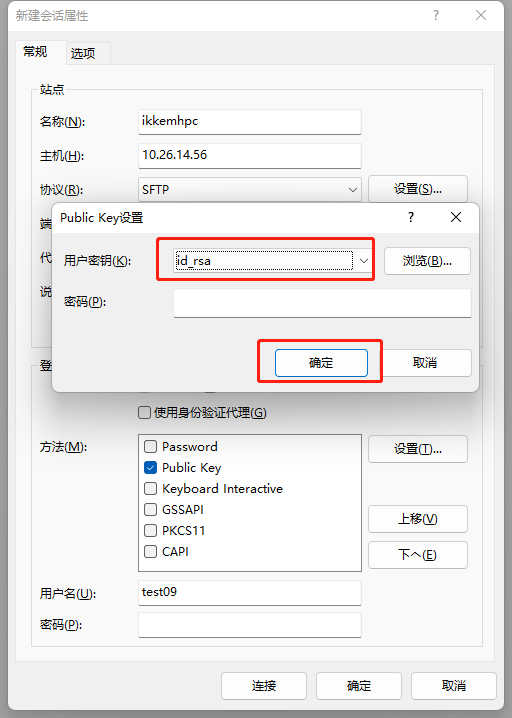
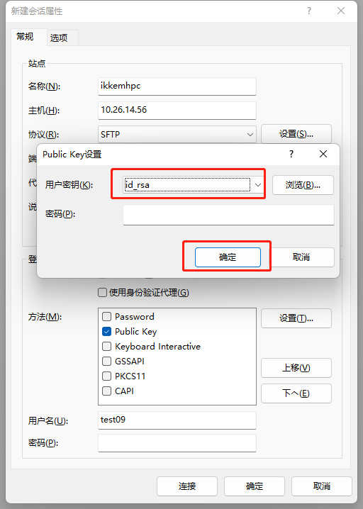
 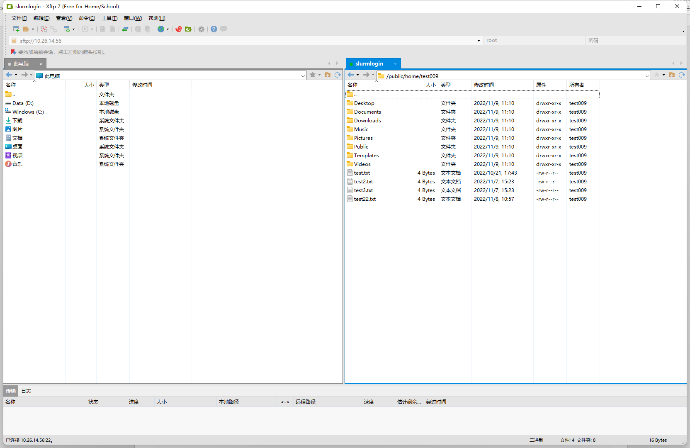
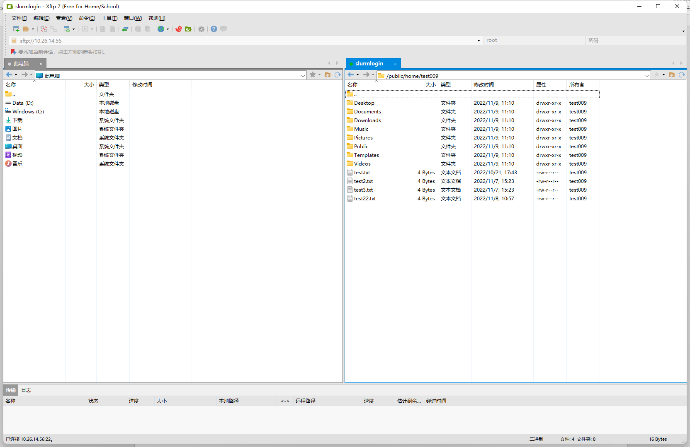
SCOW 平台传输文件¶
SCOW 平台本身也支持向集群传输文件，有两种方式。
通过文件管理模块¶
在 SCOW 平台上点击导航栏上的 "文件管理" 即可管理集群上的文件
通过SCOW Shell¶
在 SCOW 平台上点击导航栏上的 "Shell" 可以启动一个网页终端，支持以下快捷命令的使用：
- 跳转到文件系统：
sopen，输入该命令后会跳转到文件系统，您可以进行文件的上传和下载 - 文件上传：
sup，输入该命令后您可以将本地文件上传到当前路径下 - 文件下载：
sdown [文件名]，输入sdown [文件名]，您当前路径下的该文件会被下载到本地 使用示例：sdown hello.txt - 文件编辑：
sedit [文件名]，输入sedit [文件名]命令后跳转到文件编辑页面， 您可以编辑指定的文件 使用示例：sedit hello.txt
目前这一方式不支持输入相对路径，如果需要下载或编辑其他目录下的文件请使用 sopen 命令跳转到文件系统。